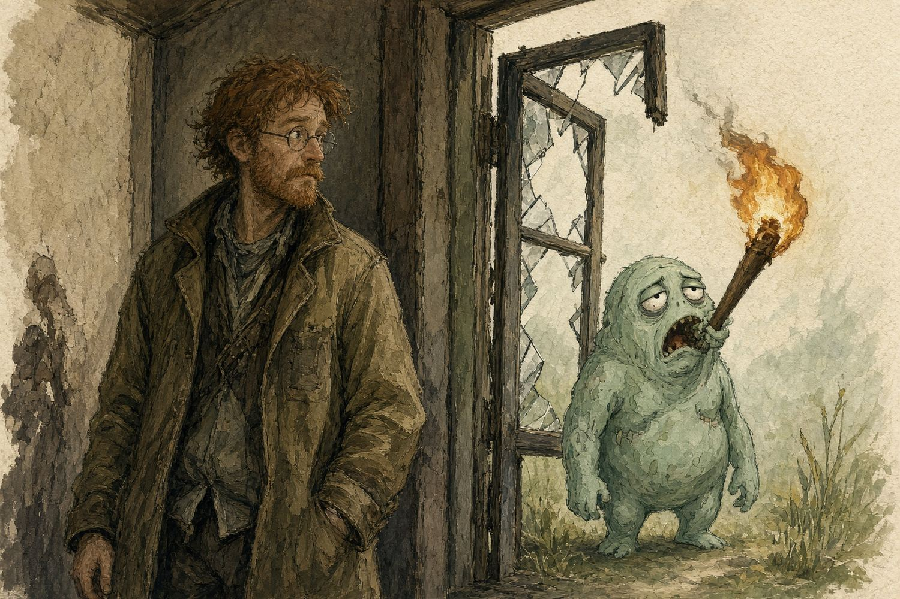

Chapter 1
The Page You Read Before the Screaming

The doorway is not a treatment area until the roof has agreed.
The first casualty of the apocalypse will probably be a man called Nigel who climbs through a broken pharmacy window while holding his torch between his teeth. Nigel has watched six survival films. None of them mentioned glass.
This book is for keeping Nigel, you, and the quieter people alive through disruption: a storm, evacuation, prolonged outage, isolated journey, or the unusually persistent queue outside the garden gate.
The zombies supply the scenery. Human bodies supply the rules.
There is no real-world zombie infection, and these pages offer no fictional cure disguised as medicine.
Before you become the second patient
Stop outside the danger long enough to notice it. Traffic, unstable walls, smoke, electricity, aggressive people, floodwater, chemicals, machinery and falling objects can defeat excellent first aid. Look for a safe approach and a safe way out. A room that contains a collapsed person may also contain the reason they collapsed. You cannot see carbon monoxide by squinting with greater commitment.
Do not enter smoke, a suspected toxic atmosphere, a confined space, or water you cannot safely negotiate. Do not touch someone still in contact with an electrical supply. Turn a supply off only if you can do that safely. A generator belongs outdoors, away from doors, windows and air intakes; a cracked garage door is not a ventilation plan. If several people develop headache, dizziness or confusion in one place, leave for fresh air and seek emergency help. Do not return to investigate. Use gloves where available, protect your eyes from splashes, cover your own cuts, and wash your hands. If gloves are absent, a clean barrier can reduce contact while you act on life-threatening bleeding.
Keep your hands away from your face. Gloves are neither a substitute for handwashing nor a magic amulet that remains clean after you have scratched your nose.
Make help a job, not a wish
In the UK, call 999 or 112 for a life-threatening emergency. Give the location first, including an access point, grid reference or landmark where useful. Say what happened, the number of patients, immediate hazards, and whether anyone is unresponsive or having difficulty breathing. Use the phone's speaker and follow the call handler.
Elsewhere, use the local emergency number. If communications fail, try a safe alternative: another handset or network, an established radio contact, a staffed aid point, or a person sent along a known safe route. Send the location and essential facts in writing. Do not leave a dependent patient without considering who will keep their airway clear, maintain pressure on bleeding, or watch for deterioration. Someone must know who went, where, and when they are expected back.
Choose a coordinator early. Their qualifications can initially be the ability to speak in sentences and count people. Assign concrete tasks: call for help; bring the first-aid bag; guide responders; keep the route clear; write the times. Point at a person and wait for acknowledgement. "Somebody do something" is a theatrical instruction with an appalling completion rate.
Consent survives the grid
Introduce yourself, explain what you want to do, and ask an awake person for permission. Preserve clothing, privacy, warmth and dignity as far as the emergency allows. Explain before you touch.
Include the person in decisions; illness does not make them communal property. Follow local rules and professional advice when capacity or consent is uncertain.
For an unresponsive person with a suspected life-threatening emergency, seek emergency help and provide necessary first aid within your competence. Avoid unnecessary exposure and keep personal information with the care team. Do not photograph a patient for entertainment. The collapse of civilisation is not an invitation to start a very disappointing media company.
What you can prepare while shops still exist
Learn practical first aid and bleeding control from a reputable instructor. Add paediatric training if children are part of your life.
Practise finding and opening the kit in darkness, with one hand, and while someone asks three irrelevant questions. Use a training mannequin for CPR; never practise chest compressions on a healthy person.
Keep paper copies of care plans, allergies, prescriptions, emergency contacts and essential device instructions. Agree an accessible meeting place and evacuation route. Identify people who need electricity, refrigerated medicines, mobility assistance or communication support. Their plan belongs near the beginning, before the dramatic discussion about axes.
Field rule. Make the scene safer, summon help, treat immediate threats, then keep reassessing. A quiet patient can be in greater danger than a loud one.
When no ambulance can reach you yet
Delayed care changes logistics; it does not turn an untrained person into a surgeon. Continue useful basics: control bleeding, protect breathing, prevent exposure, monitor changes, document care and keep trying to arrange a safe handover. Reconsider the route as conditions change. Ask remote clinicians for advice if any channel works. Write their instructions and repeat them back.
There are injuries that cannot be fixed with a field bag. Honest recognition of that fact helps people make better decisions about evacuation and comfort. Do not spend the only working torch hunting for a heroic procedure while nobody is keeping the patient warm.
Sources: R01, R02, R15. Emergency guidance is written for UK readers; local emergency numbers and services differ.